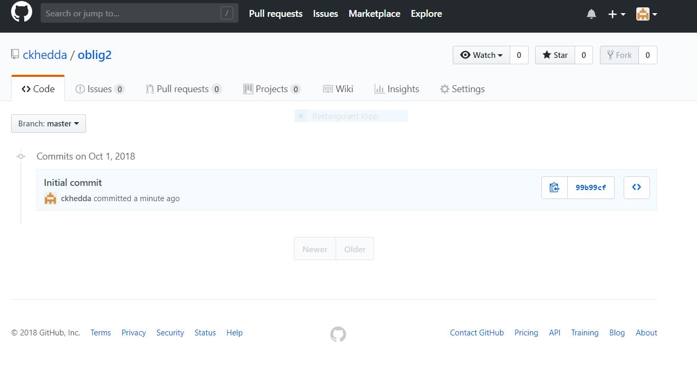

Hjemmeside
Git og Github
Git er en programvare som "tracker" ned eventuelle endringer og endrer på disse filene.
Github er en distribuerende programvare som brukere kan samarbeide på eller hente inn open-source koder. For eksempel deler brukerne filer til et eventuell prosjekt.
Fordeler med Github:
- Det gjør det enkelt for deg som bruker å kontributere dine kildekoder/prosjekter.
- Github dokumenterer endringer underveis.
- Dele og bidra til nye idéer blant andre utviklere.
Personlig mening:
Jeg syntes det er helt OK å jobbe med. Var litt forvirrende i førsten, men det kom seg etterhvert. Det er kjempe bra at programvaren kan "tracke ned" feil, dersom brukeren har med et uhell klart å slette en viktig fil.
